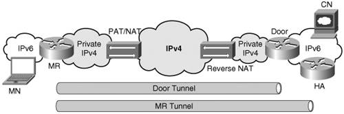
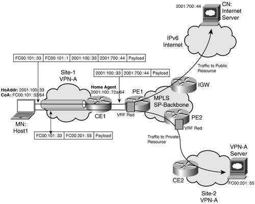
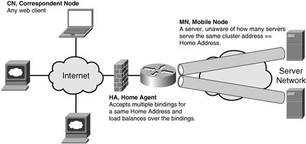

IP Mobility in Nonmobile ScenariosIP mobility could also be valuable today in deployments that are not related to devices in motion. MIPv6 has some characteristics that make it valuable outside mobility usage:
IPv4 to IPv6 TransitioningDuring the transition phase from IPv4 to IPv6, hotspots that actually provide IPv6 connectivity will be scarce and MIPv6 mobile node as well as NEMO mobile routers should support an alternate roaming technology over IPv4. Also, real mobility scenarios include satellite and mobile phones (GPRS, EDGE), which do not provide IPv6 services at all. A number of Internet Drafts propose to modify MIPv6 and NEMO to tunnel MIPv6 over IPv4, registering an IPv4 CoA to a HA IPv4 address. At the moment, these solutions lack support for NAT traversal, RO, separate IPv4 tunnel termination, and require an upgrade of both the mobile node and the HA. There is also an existing list of transitioning solutions (ISATAP, 6to4, Teredo, reviewed in Chapter 3, "Delivering IPv6 Unicast Services"), but these solutions fail to traverse in a simple fashion all types of NAT and PAT that are heavily deployed today, and their variety makes it difficult for an MN to figure out automatically which given solution it should use after roaming to a new access network. On the other hand, there is a real value in combining MIPv6 and IPv4 (NAT) traversal technologies. MIPv6/NEMO brings a mobile node to home agent tunnel and a binding cache into the picture, as well as a keepalive procedure. The MIP cache can be used to store the PAT/NAT states, and the frequency of binding flow can be tuned to keep the PAT/NAT active. As a result, it is possible for an IPv6 MN to traverse PAT/NAT with no protocol overhead or additional states in the network. This is the essence of the Doors protocol detailed in draft-thubert-nemo-ipv4-traversal. Doors encapsulate the IPv6 packets in an IPv4/UDP tunnel between the client and a stateless gateway, which can be collocated with the home agent or totally independent from it and placed at a boundary between IPv4 and IPv6. Doors operate as a bump in the client (mobile node) stack, which forges an IPv6 CoA based on a pair of IPv4 addresses and UDP ports. As such, doors are transparent to the MIPv6 support in both the client and home agent. Figure 8-11 shows a topology where doors apply. Figure 8-11. DoorsInterestingly, the mobile node does not need to be mobile per se; and coupling MIP with an IPv4 traversal technique can become a tool with a much wider scope than initially intended, and provide connectivity for IPv6 nodes over a PAT/NAT IPv4 infrastructure. Topology HidingNAT in IPv4 was invented 10 years ago with a primary goal of slowing down the IPv4 address-space depletion. But since then, NAT has been widely deployed and additional benefits have emerged, such as some sense of security and network isolation. With the drawbacks associated with NAT (reviewed in Chapter 1, "The Case for IPv6An Updated Perspective"), it was decided not to require/support NAT in IPv6. On the other hand, today's deployments rely on some of the NAT-emerged benefits, so IPv6 ought to offer an equivalent solution. Internet Draft draft-ietf-v6ops-nap reviews a list of NAT benefits and suggests IPv6 alternative solutions where needed. A good example is the capability of NAT to hide the internal topology of a private network to the public side. If a network manager wants to conceal the internal IPv6 topology, and the majority of its host computer addresses, a good option will be to run all internal traffic using unique-local addresses (ULA), because packets using these addresses are confined within the site (or the VPN in case of a multi-site topology). Issues arise as soon as some hosts need to access public resources. If they use global routable IPv6 addresses to do so, they expose de facto a subset of the internal topology. An attractive method to hide the internal topology is to deploy a MIPv6 home agent at the boundary between the public and private domain. A global prefix is set up as a home network and advertised within both the private domain and the global Internet. All nodes inside the private domain that need to reach the Internet or to be reachable from the Internet are set to be MIPv6 mobile nodes for that home agent, statically or on-demand using MIPv6 bootstrapping techniques. In MIP terms, their ULAs are used as CoA to access Internet resources and the MIP tunnel is set up inside the private space. When needed, and as described in RFC 3775, the MN establishes a tunnel with the home agent and becomes virtually located on a home link. This arrangement provides a flattened image of the site and hides its true structure to the outside. Only the nodes that are currently registered can be joined from the outside, and the home agent is a single point of control for firewalling purposes. When a node inside the site needs to establish a new connection, it determines whether the destination is inside or outside. If the correspondent is inside and the node is not mobile, the node uses its inside address (ULA) as source and does not use MIP. If the node is mobile, the node selects its HoAddr as source and forwards the packet over its MIP tunnel via the home agent. RO is permitted and desired. If the correspondent is outside, the node selects its HoAddr as source and forwards the packet over its MIP tunnel via the home agent. RO is not permitted and would not work anyway because the CoA is only reachable within the site. When a correspondent initiates a new connection, the node responds using the same means. If the correspondent is outside, it reaches the node via its HoAddr. MIP encapsulation takes place. Figure 8-12 illustrates how MIPv6 can be used to hide the internal topology of a private site, when accessing public resources over an MPLS SP backbone. Figure 8-12. Using MIPv6 to Hide Internal TopologyIn Figure 8-12, the customer site Site 1 belongs to VPN A. It is connected to the SP backbone using a virtual routing/forwarding (VRF) instance named red (see Chapter 7, "VPN IPv6 Architecture and Services," for details on VRF). It can either access the VPN A server located in VPN A at Site 2 (FC00:201::55) or the Internet server located behind the IPv6 Internet (2001:700::44) using the technique described in Chapter 7. Traffic directed to public address 2001:700::44 is encapsulated in a MIPv6 tunnel using unique-local addresses (FC00:101::/64) to reach the home agent, collocated at router CE1. Traffic directed to private address (FC00:201::55) is sent directly to PE1 without any encapsulation. Community of InterestAnother hot topic where MIPv6 could facilitate deployments is the so-called "community of interest." This is something that you could think of as a "closed user group" for IPv6. The idea is to group a set of addressable IPv6 devices together and enable communication between them while disabling or limiting communication from devices outside the group. This is similar to a community VPN, but without the setting, management, and security overhead. MIPv6 provides a way of achieving this independently of the application. By creating a level of indirection, MIPv6 enables the deployment of a "hub-and-spoke" topology, where the home agent is located at the hub, and controls which devices and which applications can communicate. Route ProjectionThe next step for the NEMO working group is to define a RO mechanism that would enable a more direct path between mobile routers. When applied to the community of interest for NEMO, this would turn the hub-and-spoke model into a mesh of routers, maintained by NEMO RO, as an overlay on the Internet infrastructure. The general term for this model is route projection. Route projection consists in dynamically setting up a transient tunnel between two routers and then exchanging a set of fine-grained routes for a limited time over that tunnel. On one hand, this compares to the BGP backbone that sustains the Internet. But in the backbone, the tunnels are manually configured and permanent, and the prefixes are much aggregated and stable. Route projection would introduce a new level in the hierarchy, with the current Internet serving as backbone. On the other hand, this compares with the traditional route injection model. With route injection, a new prefix is injected at one end of the Internet, and slowly diffuses into the whole infrastructure until it is finally reachable globally. With route projection, the routing states are only advertised on-demand to the precious few peers in a community that need them and are allowed to get them. The route projection model allows a quasi infinity of communities to form overlay meshes over the Internet. Communities do not need to interfere with each other or with the infrastructure, and do not require additional states in the Internet. As a result, route projection introduces a new way to scale the Internet, and to deploy IPv6 networks over and transparently to the current infrastructure. Server Load BalancingA number of solutions have been imagined, invented, patented, and deployed for building web server farms. In most cases, a cluster of servers is advertised to web clients as a single entity whether a single name or a single IP address. As MIPv6 provides an indirection to the network address, it can be used as a load-balancing technique at layer 3. To achieve this, the servers of the given cluster are configured as mobile nodes. They are associated with one another by statically or dynamically assigning the same HoAddr to the members of the cluster. The HoAddr becomes the network identification of the server cluster, returned by the DNS. MIPv6 establishes a tunnel between the home agent, acting as load balancer and each of the mobile nodes, acting as servers, thereby enabling the HA to distribute a given request to one of the mobile nodes via the associated tunnel. When a web client issues a server request targeting this HoAddr, the request reaches the home agent. The home agent can then decide to forward it to one of the mobile node belonging to that cluster, based on server load, distance, or any other usual metric. Figure 8-13 presents a cluster of servers behind a home agent load-balancing web client requests. Figure 8-13. Server Load-Balancing Using MIPv6 |